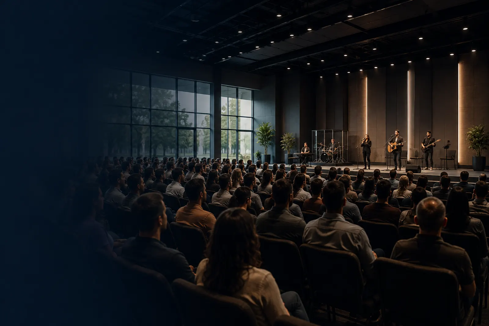

Planejamento para Igrejas e Pastores
Sua igreja tem uma visão.
Nós ajudamos a estruturar os recursos.
A ALTAMAR é uma consultoria especializada em ajudar igrejas a entender e usar o consórcio como ferramenta financeira. Viabilize a compra do terreno, a construção ou reforma do templo, veículos, e o cuidado com o futuro do pastor e dos membros. Tudo com planejamento inteligente e sem juros bancários.
Segurança e transparência que a liderança merece.
Sabemos que a gestão dos recursos da igreja exige responsabilidade. Nós ajudamos a liderança a entender o consórcio e montamos um projeto personalizado. O contrato é assinado diretamente com a Ademicon, e os pagamentos são feitos a ela — com regras claras e fiscalização do Banco Central.
O serviço da ALTAMAR não tem custo para a igreja. Somos remunerados pela Ademicon.
Ademicon
A maior administradora independente do Brasil. Mais de 35 anos de mercado.
Consultoria Oficial
Autorizada Ademicon. Acesso direto aos sistemas para elaborar o contrato da igreja.
Contrato em nome da Igreja (CNPJ)
Total transparência para a prestação de contas com o conselho.

Explicamos
O consórcio com clareza, sem letras miúdas, para toda a liderança.
Montamos
Um projeto personalizado para a visão da igreja e o futuro do pastor.
Acompanhamos
Cada assembleia e etapa do plano, até a realização do projeto.

Como funciona o consórcio.
1. A união faz a força. Um grupo de pessoas se reúne para formar uma poupança coletiva. Todo mês, cada participante (ou igreja) paga uma parcela que cabe no seu bolso, sem juros.
2. A contemplação. Todos os meses, um ou mais participantes são contemplados — por sorteio ou por lance — e recebem o valor para realizar a compra à vista.
3. O custo. Diferente do financiamento bancário, aqui não há juros. O custo do plano é apenas uma taxa de administração diluída no prazo.
Consórcio e financiamento: caminhos diferentes
O financiamento consome o caixa da igreja com juros altos. O consórcio é um caminho planejado, com custo previsível. O papel da ALTAMAR é mostrar qual faz mais sentido para o projeto da sua igreja.
Enquanto a comunidade cresce, a estrutura consegue acompanhar?
Novas pessoas chegam, as demandas aumentam e o trabalho se multiplica. Mas transformar esforço em conquistas sólidas exige um ritmo financeiro que o caixa mensal nem sempre sustenta sozinho.
Além disso, quem cuida de muitas vidas precisa garantir o próprio futuro.
O aluguel consome recursos e as ampliações ficam travadas.
Falta espaço para os ministérios e a compra da sede própria segue em compasso de espera. Sem uma estratégia, projetos vitais acabam adiados ano após ano.
O pastor cuida de muitas vidas. Mas quem planeja o futuro dele?
Anos de dedicação integral constroem vidas e ministérios, mas a formação de patrimônio pessoal costuma ser negligenciada. A jubilação precisa ser planejada com antecedência e segurança.
Qual projeto você precisa tirar do papel?
Estruturamos o caminho tanto para as necessidades da instituição quanto para a vida do líder.
Para a Igreja
Expansão e estrutura para continuar servindo com excelência.
- Sair do aluguel e comprar o terreno
- Construir o templo ou reformar
- Aquisição de vans e veículos para o ministério
- Equipamentos de som, mídia e climatização
Para o Pastor e Família
Patrimônio e tranquilidade para a maturidade ministerial.
- Casa própria para a família pastoral
- Imóveis para gerar renda na jubilação
- Reserva financeira para a aposentadoria
- Quitação de dívidas e projetos pessoais
Como nós trabalhamos
Garantindo a tranquilidade da liderança
A obra exige fé e também boa mordomia. Nossa atuação é pautada pela consultoria estratégica e pelo diagnóstico preciso. Nós mapeamos a visão da igreja, analisamos as opções e desenhamos um plano financeiro sob medida. Nosso objetivo é viabilizar a expansão da obra, protegendo o caixa da igreja e garantindo a tranquilidade do líder.
Atendimento consultivo e transparente.
O serviço da ALTAMAR não tem custo para a igreja. Somos remunerados diretamente pela Ademicon. O contrato e os pagamentos são feitos com a administradora, com toda a segurança e fiscalização do Banco Central.
Mapear
Entender a visão da igreja e a realidade financeira atual.
Analisar opções
Avaliar os caminhos viáveis e as melhores modalidades de crédito.
Planejar a estratégia
Definir prazos, lances e parcelas que caibam no orçamento da obra.
Acompanhar
Estar ao lado da liderança em cada assembleia até a conquista.
Quem já planeja o futuro com a ALTAMAR
"Grandes decisões exigem alinhamento. Apresentamos o projeto diretamente à diretoria, ao conselho ou à comissão administrativa da igreja, seja por videochamada ou presencialmente, garantindo total transparência para a liderança."
— Consultoria ALTAMAR
- Igrejas saindo do aluguel e construindo seu templo.
- Pastores planejando a casa própria e a jubilação.
- Conselhos estruturando a compra de terrenos e vans.
Perguntas Frequentes
Uma igreja (PJ) pode contratar consórcio?
Sim. Instituições religiosas e pessoas jurídicas têm autorização legal para participar de grupos de consórcio, mediante documentação institucional e análise cadastral. A contratação é formalizada no CNPJ da igreja, respeitando as aprovações internas do conselho.
A igreja precisa dar entrada?
Não. O plano pode ser iniciado com custo zero de entrada, pagando apenas a primeira mensalidade. O lance é uma opção estratégica para antecipar a liberação, não uma exigência.
Como funciona a prestação de contas para a liderança?
Todo o processo é documentado e transparente. Apresentamos as simulações, custos e regras diretamente ao conselho. O contrato é assinado com a Ademicon e os boletos são emitidos em nome da igreja, facilitando a gestão e a prestação de contas.
Vamos agendar uma conversa sobre o projeto?
Em uma conversa de aproximadamente 30 minutos, entenderemos a visão da sua igreja ou o seu projeto pessoal, e analisaremos as possibilidades financeiras para a sua realidade.
Sem custo e sem compromisso.